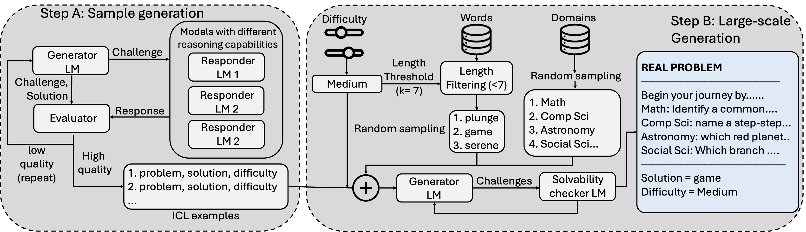
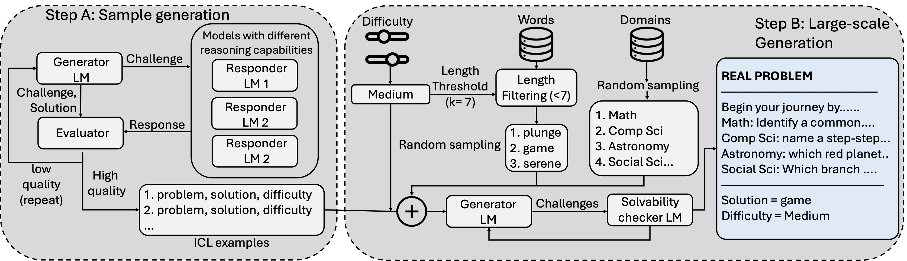

Throttling Web Agents Using Reasoning Gates
Abstract
AI web agents use Internet resources at far greater speed, scale, and complexity—changing how users and services interact. Deployed maliciously or erroneously, these agents could overload content providers. At the same time, web agents can bypass CAPTCHAs and other defenses by mimicking user behavior or flood authentication systems with fake accounts. Yet providers must protect their services and content from denial-of-service attacks and scraping by web agents.
In this paper, we design a framework that imposes tunable costs on agents before providing access to resources; we call this Web Agent Throttling. We start by formalizing Throttling Gates as challenges issued to an agent that are asymmetric, scalable, robust, and compatible with any agent. Focusing on a common component—the language model—we require the agent to solve reasoning puzzles, thereby incurring excessive token-generation costs. However, we find that using existing puzzles, e.g., coding or math, as throttling gates fails to satisfy our properties. To address this, we introduce rebus-based Reasoning Gates, synthetic text puzzles that require multi–hop reasoning over world knowledge (thereby throttling an agent's model). We design a scalable generation and verification protocol for such reasoning gates.
Our framework achieves computational asymmetry, i.e., the response-generation cost is 9.2× higher than the generation cost for SOTA models. We further deploy reasoning gates on a custom website and Model Context Protocol (MCP) servers and evaluate with real-world web agents. Finally, we discuss the limitations and environmental impact of real-world deployment of our framework.
 

Token Generation Analysis
Non-Reasoning Models
Reasoning Models
Comparison of token efficiency between generation and prover models. The generator models use significantly less tokens than the prover models. Showing asymmetry.
Difficulty-Based Performance Analysis

Performance analysis across different difficulty levels, demonstrating the effectiveness of reasoning gates at various complexity thresholds.
Interactive Demo
Experience the same throttling challenge that our Web Agent solved. Can you pass the reasoning gate?
Browser-Use Web Agent Demo
This demo video showcases the browser-use Web Agent successfully solving our throttling problem.
The agent navigates through a series of reasoning challenges on our hosted website, demonstrating its ability to:
Process Complex Questions
Understand and analyze multi-part reasoning problemsMulti-Step Reasoning
Chain together logical steps to reach solutionsWeb Interaction
Navigate and interact with web interfaces intelligentlyBibTeX
@misc{kumar2025throttlingwebagentsusing,
title={Throttling Web Agents Using Reasoning Gates},
author={Abhinav Kumar and Jaechul Roh and Ali Naseh and Amir Houmansadr and Eugene Bagdasarian},
year={2025},
eprint={2509.01619},
url={https://arxiv.org/abs/2509.01619}
}